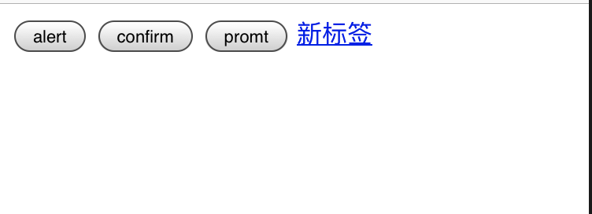
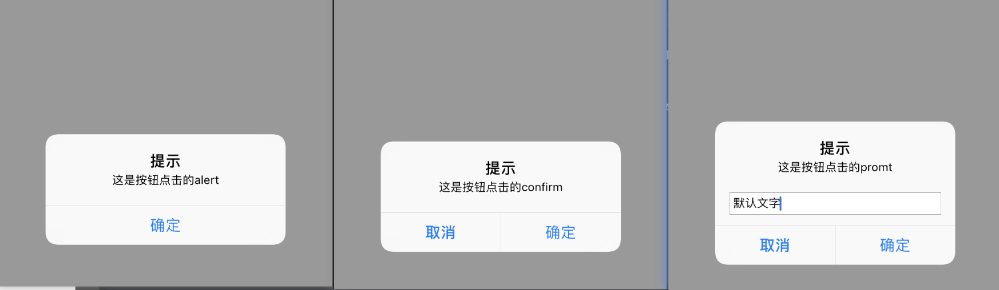

简介
WKWebView是显示交互式Web内容的对象，例如用于应用内浏览器。
WKWebView对比UIWebView的优势
1.WKWebView的内存开销要比UIWebView小很多
2.拥有高达60FPS滚动刷新率及内置手势
3.支持了更多的HTML5特性
4.html页面和WKWebView交互更方便
5.Safari相同的JavaScript引擎
6.提供常用的属性，如加载网页进度的属性estimatedProgress
WKWebView
类摘要
1 | class WKWebView : UIView |
从iOS 8.0和OS X 10.10开始，使用WKWebView将Web内容添加到您的应用程序。不要使用UIWebView或WebView。
类方法
确定WebKit是否可以加载内容
1 | class func handlesURLScheme(String) -> Bool |
初始化Web视图
1 | var configuration: WKWebViewConfiguration |
检查视图信息
1 | var scrollView: UIScrollView |
设置代理
1 | var navigationDelegate: WKNavigationDelegate? |
加载内容
1 | var estimatedProgress: Double |
缩放内容
1 | var allowsMagnification: Bool |
导航
1 | var allowsBackForwardNavigationGestures: Bool |
执行JS
1 | func evaluateJavaScript(String, completionHandler: ((Any?, Error?) -> Void)?) |
拍摄快照
1 | func takeSnapshot(with: WKSnapshotConfiguration?, completionHandler: (UIImage?, Error?) -> Void) |
简单使用
1 | import UIKit |
要允许用户在网页历史记录中前后移动，请使用和方法作为按钮操作。当用户无法向某个方向移动时，请使用和属性禁用按钮。goBack()、goForward()、canGoBack、canGoForward。
默认情况下，Web视图会自动将Web内容中显示的电话号码转换为电话链接。点击电话链接后，电话应用程序将启动并拨打该号码。若要关闭此默认行为，请使用不包含该标志的位域设置该属性。dataDetectorTypes、WKDataDetectorTypes、phoneNumber
您还可以使用以第一次在Web视图中显示的方式以编程方式设置Web内容的比例。此后，用户可以使用手势来改变比例。setMagnification(_:centeredAt:)
WKNavigationDelegate
WKNavigationDelegate协议的方法可帮助您实现在Web视图接受，加载和完成导航请求的过程中触发的自定义行为。
协议方法
启动导航
1 | func webView(WKWebView, didCommit: WKNavigation!) |
响应服务器操作
1 | func webView(WKWebView, didCommit: WKNavigation!) |
身份验证
1 | func webView(WKWebView, didReceive: URLAuthenticationChallenge, completionHandler: (URLSession.AuthChallengeDisposition, URLCredential?) -> Void) |
错误处理
1 | func webView(WKWebView, didFail: WKNavigation!, withError: Error) |
跟踪加载进度
1 | func webView(WKWebView, didFinish: WKNavigation!) |
允许导航
1 | func webView(WKWebView, decidePolicyFor: WKNavigationAction, decisionHandler: (WKNavigationActionPolicy) -> Void) |
导航政策
1 | enum WKNavigationActionPolicy |
WKUIDelegate
WKUIDelegate协议提供网页的呈现接口的方法，例如alert。
WKWebView委托实现此协议以控制新窗口的打开，增强用户单击元素时显示的默认菜单项的行为，以及执行其他与用户界面相关的任务。可以在处理JavaScript或其他插件内容时调用这些方法。默认Web视图实现假定每个Web视图有一个窗口，因此非传统用户界面可能实现用户界面委托。
协议方法
创建Web视图
1 | func webView(WKWebView, createWebViewWith: WKWebViewConfiguration, for: WKNavigationAction, windowFeatures: WKWindowFeatures) -> WKWebView? |
显示UI面板
1 | func webView(WKWebView, runJavaScriptAlertPanelWithMessage: String, initiatedByFrame: WKFrameInfo, completionHandler: () -> Void) |
关闭Web视图
1 | func webViewDidClose(WKWebView) |
显示上传面板
1 | func webView(WKWebView, runOpenPanelWith: WKOpenPanelParameters, initiatedByFrame: WKFrameInfo, completionHandler: ([URL]?) -> Void) |
响应强制触摸操作
1 | func webView(WKWebView, shouldPreviewElement: WKPreviewElementInfo) -> Bool |
WKWebViewConfiguration
用于初始化Web视图的属性集合。使用该类，您可以确定网页的呈现时间，处理媒体播放的方式，用户可以选择的项目的粒度以及许多其他选项。WKWebViewConfiguration仅在首次初始化Web视图时使用。创建后，您无法使用此类更改Web视图的配置。
类方法
配置新Web视图的属性
1 | var applicationNameForUserAgent: String? |
确定网页可伸缩性
1 | var ignoresViewportScaleLimits: Bool |
设置渲染首选项
1 | var suppressesIncrementalRendering: Bool |
设置媒体播放首选项
1 | var allowsInlineMediaPlayback: Bool |
设置选择粒度
1 | var selectionGranularity: WKSelectionGranularity |
选择用户界面方向性
1 | var userInterfaceDirectionPolicy: WKUserInterfaceDirectionPolicy |
识别数据类型
1 | var dataDetectorTypes: WKDataDetectorTypes |
为新的URL方案添加处理程序
1 | func setURLSchemeHandler(WKURLSchemeHandler?, forURLScheme: String) |
WKPreferences
WKPreferences对象封装用于web视图偏好设置。与Web视图关联的首选项对象由其Web视图配置指定。
类方法
设置渲染首选项
1 | var minimumFontSize: CGFloat |
设置Java和JavaScript首选项
1 | var javaEnabled: Bool |
WKProcessPool
WKProcessPool对象表示Web内容进程的池。
与Web视图关联的进程池由其Web视图配置指定。每个Web视图都有自己的Web内容流程，直到达到实现定义的流程限制；之后，具有相同流程池的Web视图最终共享Web内容流程。
该类没有属性或它自己的方法
WKUserContentController
该对象为Javascript提供了注射用户脚本到WKWebVIew的方法。
类方法
添加消息处理程序
1 | func add(WKScriptMessageHandler, name: String) |
添加和删除用户脚本
1 | func addUserScript(WKUserScript) |
添加和删除内容规则
1 | func add(WKContentRuleList) |
WKWebView使用
上边的一些概念介绍完后，我们来使用一下
常用方法
基本创建和配置
引入模块
1 | import Webkit |
ViewController中实现WKUIDelegate、WKNavigationDelegate协议
1 | class WKWebViewController: UIViewController, WKUIDelegate, WKNavigationDelegate |
设置WKWebView的配置项
1 | let config = WKWebViewConfiguration() |
创建WKWebVIew并遵守协议
1 | self.webview = WKWebView(frame: self.view.frame, configuration: configWebView()) |
WKWebVIew加载本地html
1 | let url = Bundle.main.url(forResource: "index", withExtension: "html")! |
html文件放在项目目录即可。有文件夹时请更改路径
实现WKUIDelegate
在网页中一般都会含有alert、promt、confirm等的对话框，需要我们原生去编码实现。
先创建一个index.html放在项目目录下
1 |
|
新建一个类并继承ViewController，并遵循WKUIDelegate协议：
1 | class WKUIViewController: UIViewController, WKUIDelegate |
导入库，并添加webview到界面上，并加载本地index.html文件。
1 | let url = Bundle.main.url(forResource: "index", withExtension: "html")! |
预览一下界面：

可以发现点击是没有任何反应的，但是不实现WKUIDelegate协议或者实现了协议但不实现方法是不会报错的，但是实现了方法又不在方法体内调用回调函数是会报错的。
这里使用UIAlertController简单实现UI：
1 | //Alert |
实现效果：

实现标题栏和加载进度条
WKWebView中有三个属性是支持KVO的。因此我们可以通过监听其值的变化来实现对应的功能，即loading、title、estimatedProgress三个属性。
新建一个类并继承ViewController，并遵循WKUIDelegate与WKNavigationDelegate协议：
1 | class BrowserViewController: UIViewController, WKUIDelegate, WKNavigationDelegate |
初始化WKWebView方法
1 | var webview: WKWebView! |
初始化进度条方法
1 | func initProgress() { |
并在ViewDidLoad方法中调用。重载监听方法
1 | //在监听方法中监听进度条和标题的变化 |
在实现WKNavigationDelegate的两个代理方法以实现进度条的隐藏和现实
1 | - (void)webView:(WKWebView *)webView didStartProvisionalNavigation:(WKNavigation *)navigation { |
在页面消失后取消监听，否则可能会出现一些未知的异常，在ViewController生命周期的viewDidDisappear方法中实现：
1 | override func viewDidDisappear(_ animated: Bool) { |
运行效果：
应用内H5跳转第三方APP
应用内web视图页面都会有一些跳转第三方APP的需求，获取跳转APP Store。
这里有一个redirect.html页面，分别是跳转粉丝福利购、拨打电话、跳转微信APP Store。放在了项目根目录下：
1 |
|
创建WKWebView就不再多讲了，需要跳转第三方APP或者打开APP Store的链接就需要遵循WKNavigationDelegate协议，并实现webView(_:decidePolicyFor:)方法：
1 | func webView(_ webView: WKWebView, decidePolicyFor navigationAction: WKNavigationAction, decisionHandler: @escaping (WKNavigationActionPolicy) -> Void) { |
对于自定义的
URL Scheme类型链接，如果不实现该方法，在WKWebView里直接点击则会报错：Error Domain=NSURLErrorDomain Code=-1002 "unsupported URL"。如果需要具体判断到打开某些app只要具体判断scheme即可。
跳转APP Store的话因为app store的网页已经配置了Universal Link跳转，所以不需要额外的配置即可跳转。
注意：必需要在真机上测试。
WKWebView的3Dtouch预览功能
将WKWebView的allowsLinkPreview属性设置NO即可关闭
仿微信WebView
运行效果：

实现代码：
1 | // |
包括了设置UA的方式，至于左侧的关闭按钮和右侧的更多按钮则可以自己实现美化。这里不多实现了。
资料参考
https://developer.apple.com/documentation/webkit/wkwebview
https://kangzubin.com/wkwebview-link/
https://www.jianshu.com/p/bf2008d80e2d